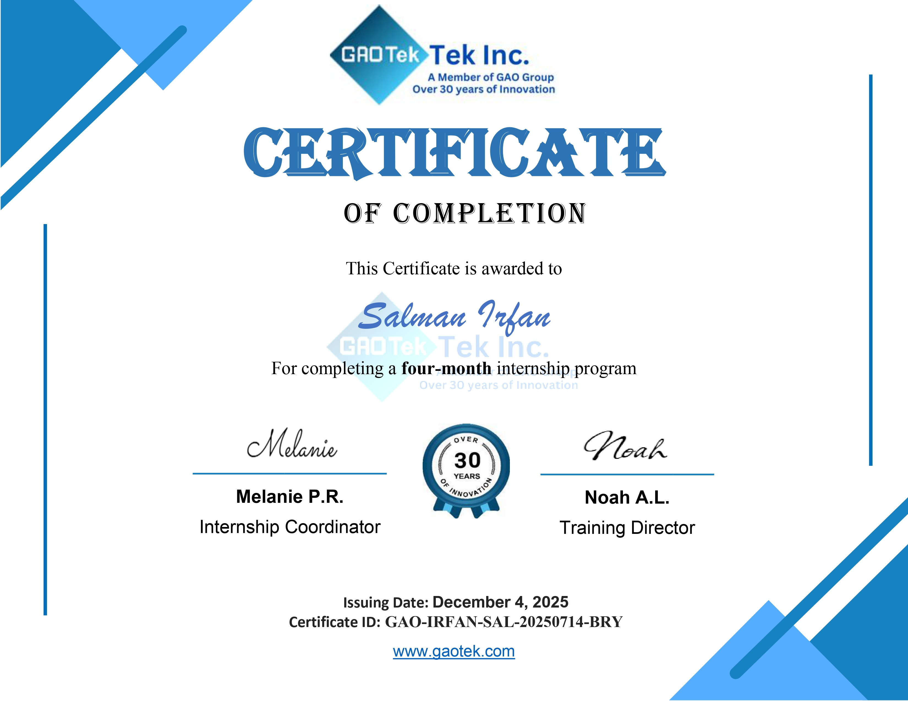
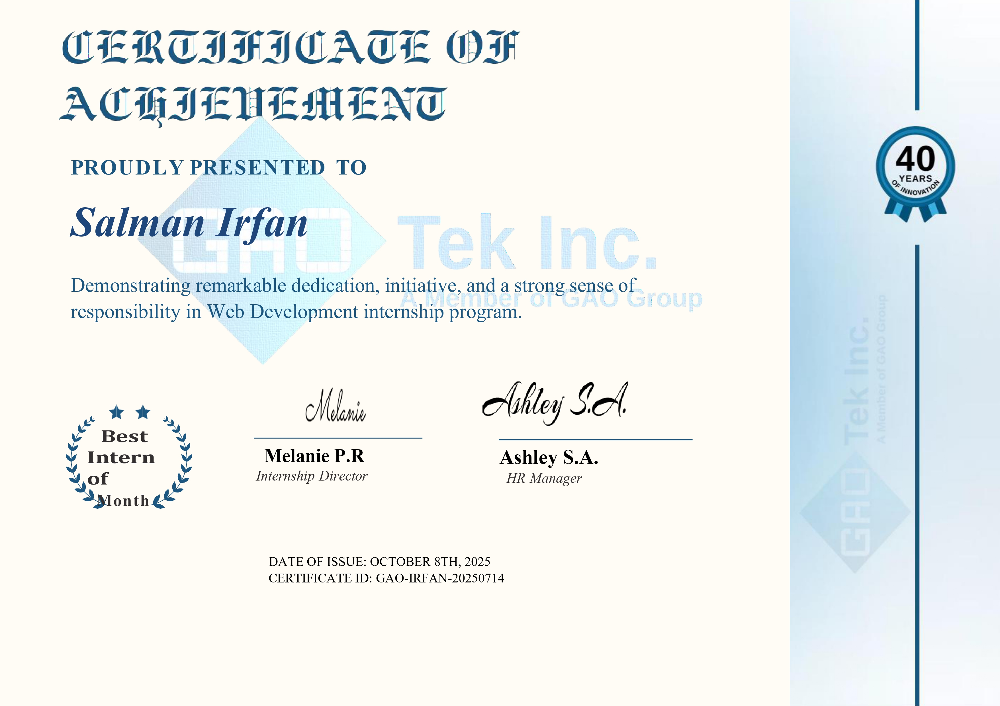

CS Student at Lahore Garrison University &
Web Dev Intern at GAO Tek Inc.
Building digital experiences, creating content, and growing every day.
I'm Salman Irfan, a Computer Science undergraduate at Lahore Garrison University with a deep passion for web development, digital content, and technology. I believe in learning by doing — every project, internship, and piece of content I create teaches me something new.
Through my internship at GAO Tek Inc., I gained international collaboration experience working alongside professionals from different countries. My performance earned me the prestigious Best Intern of the Month Award — one of my proudest achievements.
I interned at ISPR, gaining professional workplace experience and developing discipline, teamwork, and organisational skills in a high-standard environment.
Beyond code, I'm a content creator who started making gaming videos in 2020, runs an Instagram page focused on football and trending topics, and publishes articles on Medium. I also hold certifications from Google and Coursera in Git & GitHub and SEO Tools. Music and singing are creative outlets I'm passionate about too.
A blend of technical and soft skills built through academics, internships, and independent projects.
Click any certificate to view it in full size.


Milestones, awards, and recognitions collected along the journey.
The things that fuel my creativity and keep me inspired outside of work.
I'm currently open to internship opportunities, freelance projects, and collaborations. Whether you want to work together, discuss tech, or just say hi — my inbox is always open.
Reach me through any of the platforms on the right, or connect directly on LinkedIn for professional enquiries.
Send an email ↗